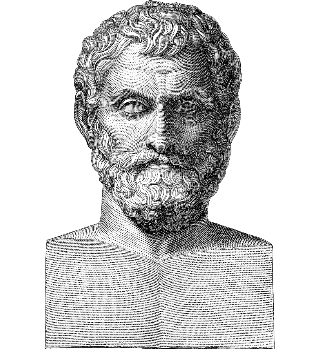
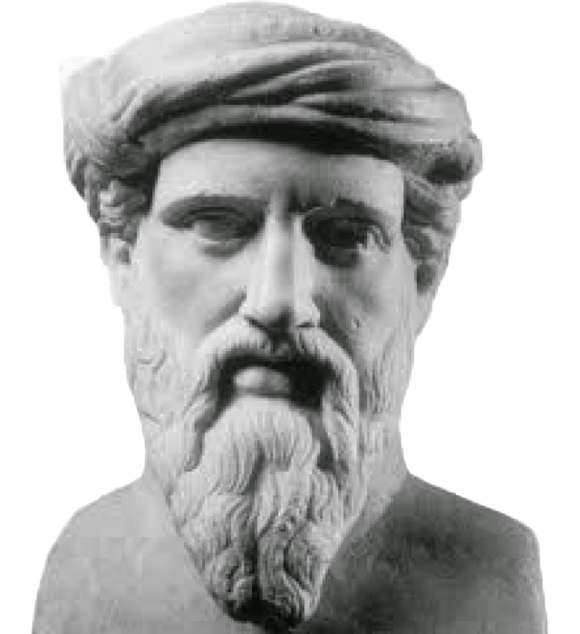
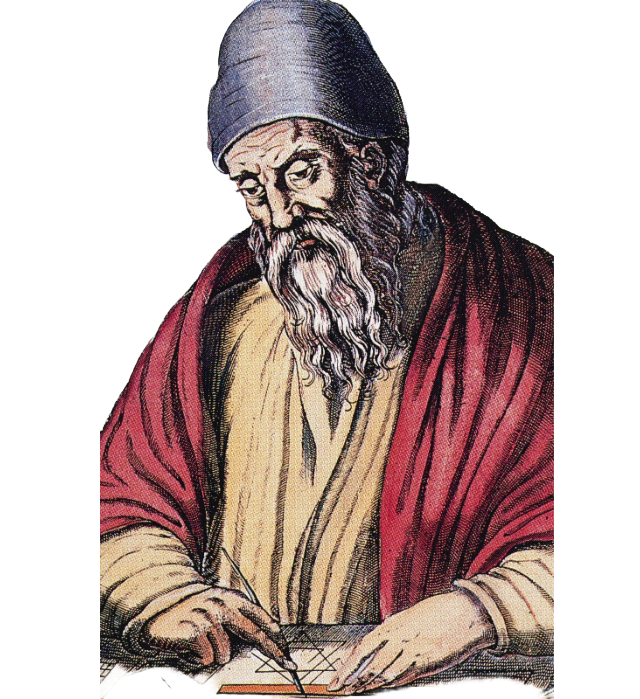
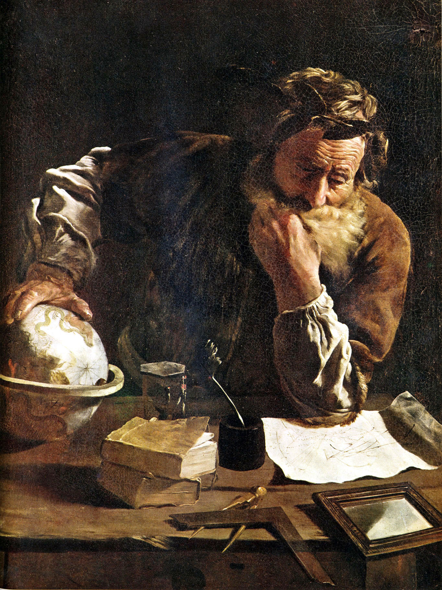
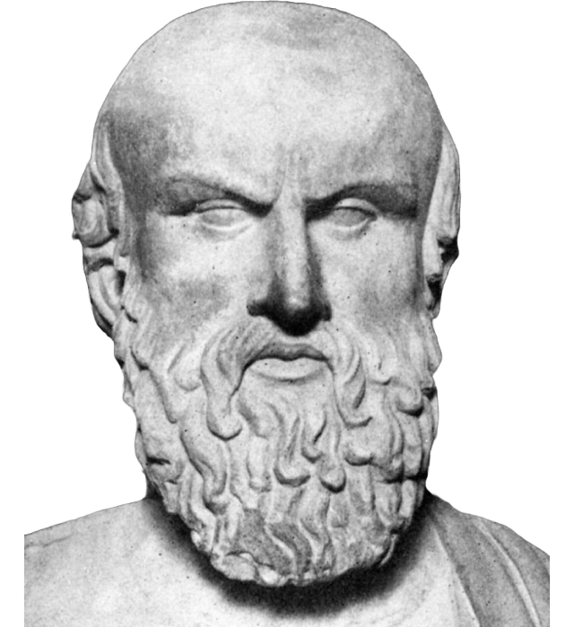
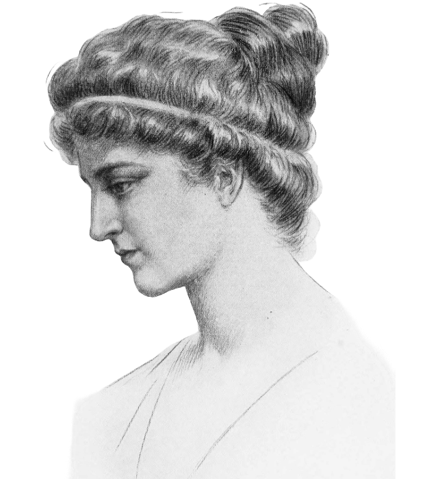

Antichitatea
3000 î.Hr - 400 d.Hr.

3000 î.Hr - 400 d.Hr.
Perioada lumii antice a fost marcată de dezvoltarea raționamentului logic și a geometriei, în special în Grecia antică. Filosofia și matematica s-au împletit strâns, fiind considerate instrumente esențiale în înțelegerea universului. În această epocă au apărut concepte fundamentale, precum demonstrația matematică, axiomatica și începuturile trigonometriei. Egiptul și Babilonul au influențat gândirea greacă, însă grecii au fost primii care au căutat să deducă adevăruri matematice prin raționamente abstracte, nu doar prin experiență practică.
Thales (624 – 546 î.Hr.) a fost unul dintre primii filosofi și matematicieni greci, considerat fondatorul geometriei grecești. Thales este cunoscut pentru teorema care îi poartă numele – un caz particular de triunghi dreptunghic în cerc – și pentru faptul că a folosit metode deductive pentru a rezolva probleme geometrice. O curiozitate celebră este că a prezis o eclipsă de soare, demonstrând că matematica poate fi aplicată în astronomie – fapt uluitor pentru vremea sa.

Pitagora (570 – 495 î.Hr.) a fost un filosof și matematician grec, fondator al școlii pitagoreice – o comunitate cu caracter semi-religios în care matematica era esențială în înțelegerea cosmosului. Este cel mai bine cunoscut pentru teorema lui Pitagora, dar școala sa a dezvoltat și teorii despre proporții, armonia muzicală și natura numerelor (pare, impare, perfecte etc.). O curiozitate este că pitagoreicii considerau numerele ca având caracter sacru și că, potrivit legendei, Pitagora ar fi interzis divulgarea descoperirii numerelor iraționale.

Euclid (~300 î.Hr.) a fost un matematician grec care a predat în Alexandria, cunoscut drept „părintele geometriei”. Opera sa principală, „Elementele”, este una dintre cele mai influente lucrări din istoria matematicii, introducând sistemul axiomatic și metodele riguroase de demonstrație. Curios este că lucrarea sa a fost manualul standard de geometrie timp de peste 2000 de ani și că multe dintre axiomele și postulatele sale sunt încă predate în școlile de azi.

Arhimede (287 – 212 î.Hr.) a fost un geniu al Antichității, excelenți în matematică, fizică și inginerie, originar din Siracuza. Contribuțiile sale includ metode pentru calculul ariei și volumului, studiul spiralelor, descoperirea valorii aproximative a lui π și dezvoltarea unor concepte incipiente ale integrării. Este faimos pentru exclamația „Evrika!” – spusă, conform legendei, după ce a descoperit principiul care îi poartă numele în timp ce făcea baie.

Hiparh (190 – 120 î.Hr.) a fost un astronom și matematician grec, recunoscut ca fondatorul trigonometriei. A elaborat primele tabele trigonometrice cunoscute și a dezvoltat metode pentru măsurarea poziției stelelor și planetelor, folosind concepte geometrice. Un fapt interesant este că Hiparh a descoperit precesia echinocțiilor, o descoperire astronomică fundamentală care a fost redescoperită abia în epoca modernă.

Hypatia din Alexandria (360 – 415) a fost o matematiciană, filosofă și astronomă, una dintre ultimele figuri importante ale învățăturii elenistice din Alexandria. A contribuit la comentarii și îmbunătățiri ale lucrărilor lui Diophantus, Euclid și Ptolemeu, păstrând și dezvoltând cunoștințele matematice ale Antichității târzii. Tragic și impresionant, Hypatia a fost ucisă brutal de o mulțime instigată de conflicte religioase, devenind simbol al luptei pentru cunoaștere și rațiune.
